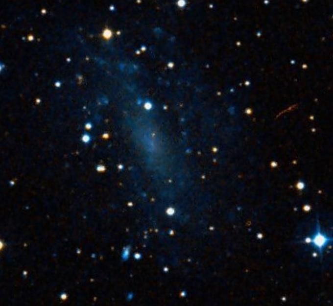

UGC 12632, A low surface brightness dwarf
- Name: UGC 12632 -- dwarf galaxy in Andromeda
- RA: 23 29 58.8
- Dec: +40 59 25
At mag 12.1V (RC3), you might think this relatively nearby (roughly 20 million l.y.) dwarf spiral would be an easy catch. But its light is spread out over a 4.5'x3.7' region and the surface brightness is a low 15.0. This galaxy has a similar redshift as NGC 7640 and UGC 12588 and the trio, though spread out over 89', forms KTG 80 from the Karachentseva Isolated Triplets Catalogue (84 northern triples).
By the way, the KTG (members brighter than 15.7pg) and similar KTS (southern counterpart), which Alvin Huey has been highlighting in his recent observing reports, is a great observing project for 12" and larger scopes. I've been having fun the past several months observing these groups.
Also, UGC 12632 is number DDO 217, from the 1959 David Dunlop Observatory Catalogue of Dwarf Galaxies by Sydney van den Bergh, another challenging observing project!
I haven't read many amateur observations of this galaxy, so I'm curious to hear how easy or difficult folks find this galaxy. Here's an observation I made a couple of months ago with my 24" f/3.7:
At 200x this challenging dwarf appeared as a very faint, very large, hazy glow, ~2' diameter. Although the outline was very ill-defined due to the extremely low surface brightness, the glow was confined within a triangle of mag 14 stars with sides of 2', 2' and 1.4'. There was no noticeable core, though there appeared to be a very slight brightening about 45" S of the star at the NW vertex. Located 1.5 degrees east of NGC 7640.

"GIVE IT A GO AND LET US KNOW"
GOOD LUCK AND GREAT VIEWING!